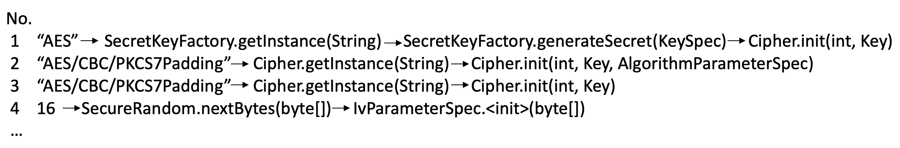
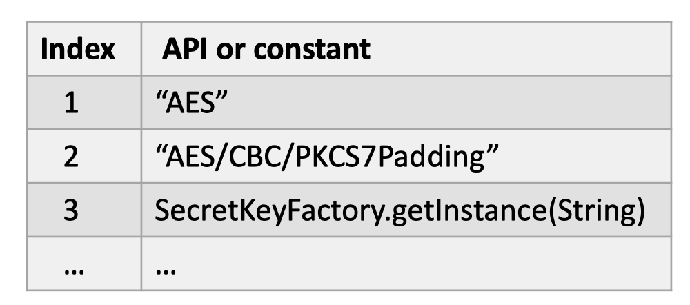
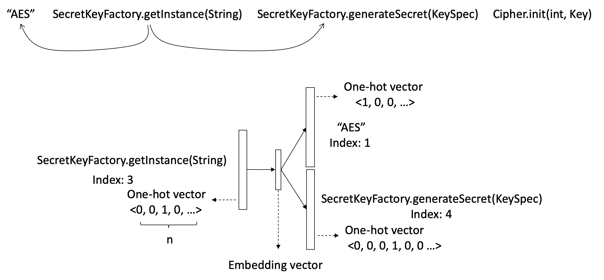
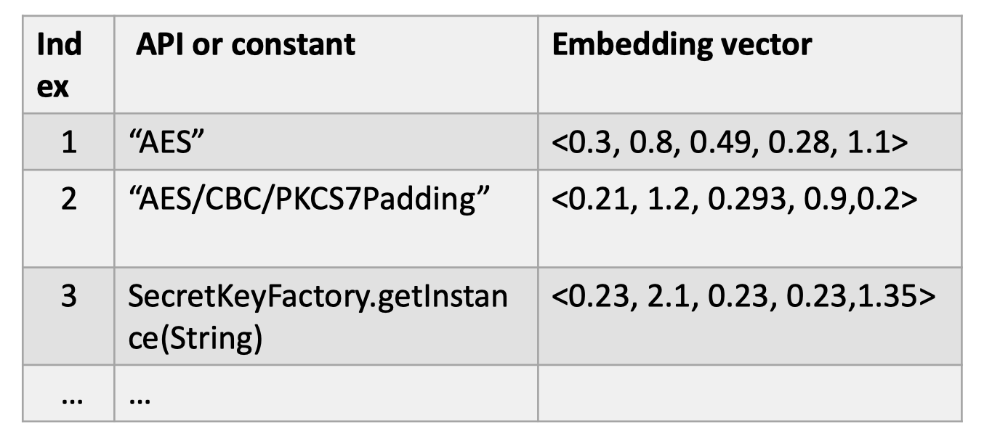
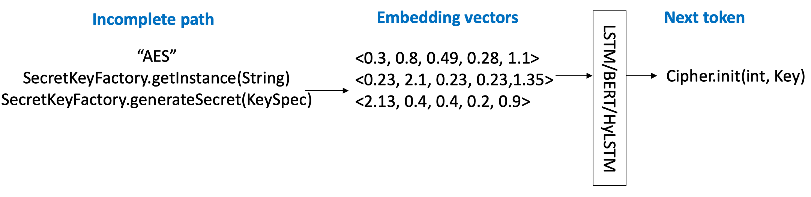
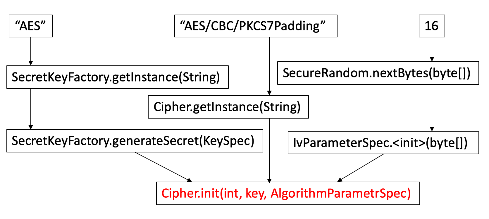
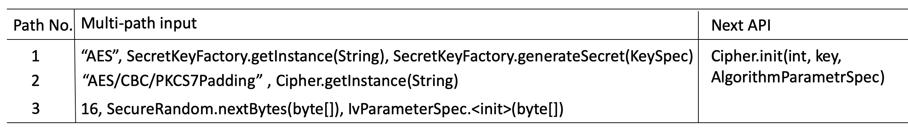
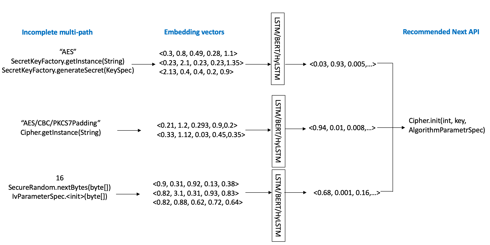

A Simple Step-by-step Example of API Recommendation
We show a simple step-by-step example of how the multi-path architecture works with the HyLSTM model.
The paths extracted from the API dependence graphs look like Figure 1.

Figure 1. Extracted paths from API dependence graphs
Step 1: Build Vocabulary.
First of all, we collect all the APIs and constants appearing in these paths into a vocabulary.

Figure 2. A vocabulary composed of APIs and constants
Step 2: API and constant Embedding.
We treat each dependence path extracted from the API dependence graph as a sentence in natural langauge. A standard word embedding model skip-gram is applied to train the embedding vector of every token (API and constant) in our vocabulary.

Figure 3. Skip-gram model to train API and constant embedding from dependence path context
Now we get the low-dimensional neumeric vector representation for all the tokens as shown in Figure 4.

Figure 4. The low-dimensional numeric vecotr representation for each API or constant
Step 3: Train sequence model as a building block.

Figure 5. A single path is input into the sequence model to output the next API in use
As shown in Figure 5, a sequence model (HyLSTM) then accpets the embedding vectors of a sequence of tokens. The output is the classification result on the recommended next token. In the paper, we also experimented with other choices (BERT/LSTM) of sequence models for comparison purpose.
Step 4: Multi-path selection.
Instead of relying on a single path, we want to get multiple paths reaching to the same place (red in Figure 6) for API recommendation. We apply multi-path selection for it.

Figure 6. Select multiple paths reaching to the red highlighted node (to be recommended) as the input

Figure 7. The three paths in Figure 6.
Step 5: Multi-path archetecture for the final API Recommendation.
In the multi-path architecture, the model takes several paths at the same time. Each path is an input for one sequence model identical to Figure 3. The output vectors are aggreated by an standard average pooling layer. The final API recommendation is the classification result from the output vector of the pooling layer.

Figure 8. API recommendation under the multi-path model architecture.